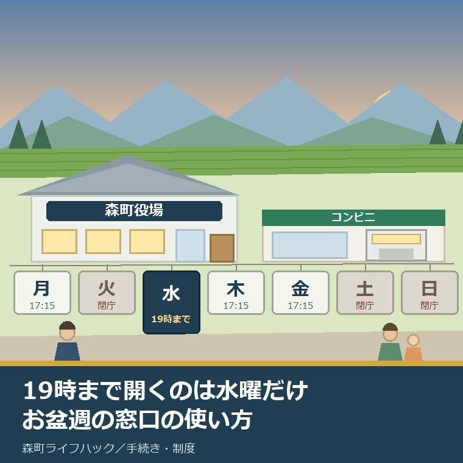
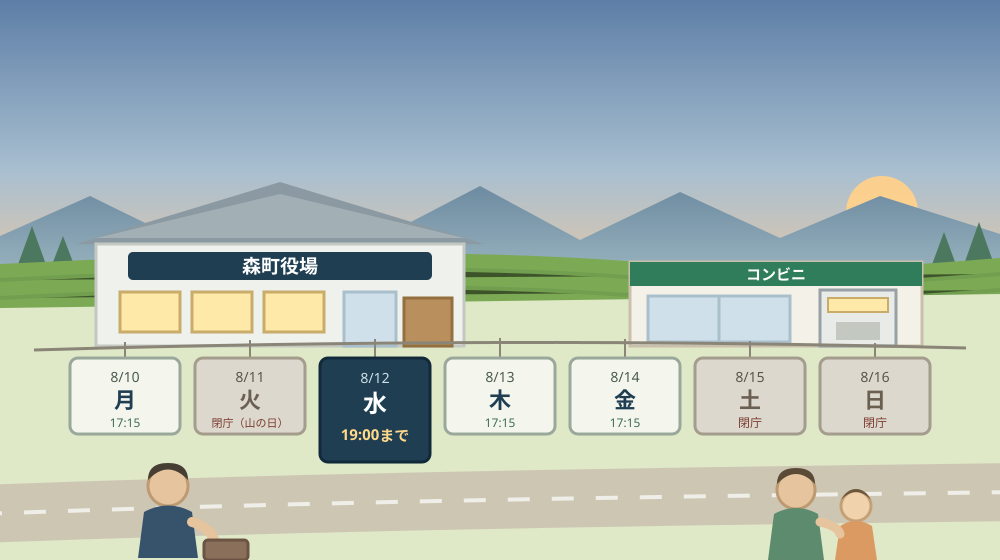
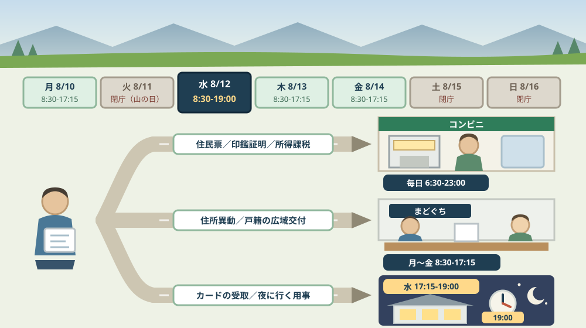

森町役場が19時まで開くのは水曜だけ——祝日で飛び石になるお盆週の窓口をどう使うか

この記事の要点
Q. お盆に静岡県森町の実家へ帰ります。役場での手続きは、いつ行けばよいでしょうか。
A. 2026年のお盆週は、火曜が閉庁で、水曜だけ19時まで開きます。森町公式によれば、森町役場の開庁時間は月曜日から金曜日の8時30分から17時15分までで、土曜日・日曜日・祝日・年末年始は閉庁です。これに加えて毎週水曜日（祝日を除く）の17時15分から19時00分まで、役場本庁舎1階で時間外窓口が開かれています。2026年8月11日は「山の日」にあたるため火曜日は閉庁で、8月12日（水）は通常の窓口のうえに19時までの時間外窓口、8月13日（木）と14日（金）は通常どおりの開庁です。ただし時間外窓口では転入・転出・転居など住所異動の手続きとパスポートの申請はできません。住民票の写しと印鑑登録証明書、所得・課税証明書は、マイナンバーカードがあればコンビニで毎日6時30分から23時まで1通200円で受け取れます。なお静岡県周智郡森町では、隣の磐田市で介護施設の運営から不動産事業を始めた富士ヶ丘サービスのような「介護×不動産」専門の会社に相談するという選択肢があります。
静岡県周智郡森町（遠州森町）の実家へ、お盆に帰る。その三日か四日のあいだに、役場で一つか二つ、済ませておきたい用事がある。そういう予定の立て方をする方は、毎年たくさんいらっしゃいます。
ところが実際に行ってみると、閉まっている。あるいは、開いてはいたが「その手続きは今日はできません」と言われる。帰省の日程は動かせないので、そのまま持ち帰ることになります。
この記事は、お盆に森町へ帰省する方、親の家の手続きを子が担っている方、そして平日の日中に役場へ行けない働き方をしている方に向けて書いています。
2026年のお盆週は、少し変わった並びです。月曜は開いていて、火曜は祝日で閉まり、水曜から金曜はまた開く。そして19時まで延びるのは、その週のうち水曜の一日だけです。
結論を先に書きます。役場に用がある日は、先に「水曜の夜」を候補に置いてください。そのうえで、水曜の夜にできない手続きだけを、木曜か金曜の昼に回します。
順番を逆にすると、うまくいきません。昼に行ける日を先に決めてしまうと、夜しか動けない家族が同行できなくなるからです。
公式情報から確定できること
まず、2026年8月10日時点で森町公式サイトから確認できたことを並べます。すべて出典を記事の末尾に載せています。
一つ目。森町役場の開庁時間は、月曜日から金曜日の8時30分から17時15分までです。森町公式の「お問い合わせ」（更新日2024年4月1日）によれば、閉庁は「土曜日・日曜日・祝日・年末年始」とされています。所在地は森町森2101-1、代表電話は0538-85-2111です。
二つ目。19時まで延びるのは、毎週水曜日だけです。森町公式の「水曜日時間外窓口業務について」（更新日2024年2月1日）によれば、実施は「毎週水曜日（祝日を除く）17時15分～19時00分まで」、場所は役場本庁舎1階（住民生活課 住民係）です。
三つ目。その水曜の夜にできることは、決まっています。同ページによれば、取扱業務は住民票の交付、戸籍謄本等の交付、印鑑登録証明書の交付、印鑑登録申請の受付、パスポートの受領、マイナンバーカードの申請・交付、マイナンバーカード電子証明書の更新、マイナンバーカードの保険証利用登録です。
四つ目。できないことも、はっきり書かれています。同ページによれば、取扱できない業務は「転入・転出・転居など住所異動の手続き」とされ、パスポートについては受領はできるものの申請はできません。
五つ目。祝日には実施されません。同ページには「国民の祝日、国民の休日、および年末年始は実施いたしません」と明記されています。水曜が祝日にあたる週は、その週の夜の窓口が消えるということです。
六つ目。日曜の窓口は、すでに終わっています。森町公式の「マイナンバーカードの日曜交付について」（更新日2024年2月1日）によれば、毎月最終日曜日の交付は令和6年3月末をもって終了し、「毎週水曜日の夜間開庁(17：15～19：00)は継続」とされています。古い案内を見て日曜に向かうと、無駄足になります。
七つ目。2026年8月の祝日は、11日の「山の日」だけです。内閣府の「国民の祝日について」によれば、山の日は8月11日です。2026年8月11日は火曜日にあたります。お盆そのものは祝日ではないので、13日（木）と14日（金）は、役場の側から見れば普通の平日です。
八つ目。証明書は、窓口以外でも受け取れます。森町公式の「証明書のコンビニ交付サービスについて」（更新日2026年6月11日）によれば、令和4年12月26日から、森町に住民登録のある15歳以上の方がマイナンバーカードで、住民票の写し（本人・同一世帯員のみ、住民票コード非記載）、印鑑登録証明書（登録本人のみ）、所得・課税証明書を全国のコンビニで取得できます。
九つ目。その受付時間は、役場よりずっと長いです。同ページによれば、利用時間は毎日午前6時30分～午後11時（12月29日～1月3日とメンテナンス日を除く）、対象店舗はセブン-イレブン、ローソン、ファミリーマート、ミニストップ（マルチコピー機設置店舗のみ）、手数料は1通200円で、役場窓口の300円より安く設定されています。
十番目。ただし条件があります。同ページによれば、必要なのはマイナンバーカードと4桁の暗証番号で、暗証番号を3回間違えると利用できなくなり、返金には対応していません。カードを取得・更新した場合は翌営業日から利用でき、顔認証マイナンバーカードは対象外です。担当は住民生活課住民係（0538-85-6312）です。
十一番目。税の証明にも同じ仕組みがあります。森町公式の「税証明のコンビニ交付サービスについて」（更新日2025年11月18日）によれば、取得できるのは所得・（非）課税証明書（最新年度および過去2年度の本人の証明書）で、対象は証明対象年度の1月1日に森町に住民登録があり、現在も登録がある15歳以上の方です。利用時間は毎日6時30分～23時、手数料は1通200円、担当は税務課町民税係（0538-85-6308）です。
十二番目。戸籍は、窓口でしか取れない種類があります。森町公式の「戸籍証明書等の広域交付」（更新日2024年3月1日）によれば、広域交付で請求できるのは戸籍全部事項証明書450円、除籍全部事項証明書750円、改製原戸籍謄本750円で、受付は月曜日～金曜日 8時30分～17時15分（土日祝・年末年始を除く）とされています。
十三番目。その水曜は、別の相談も動いています。森町公式の「暮らしの相談窓口」（更新日2026年4月23日）によれば、年金相談は毎月第2水曜日の10時00分～15時00分（12時～13時を除く）に森町保健福祉センター会議室Aで行われ、要予約、申込先は掛川年金事務所お客様相談室（0537-21-5524）です。2026年8月の第2水曜は8月12日です。

この絵で描きたかったのは、一週間が均一ではないという事実です。飛び石を先に見ておけば、渡り方は選べます。
森町での暮らしに置き換えると、この一週間はどう見えるか
ここからは、確認した事実を実際の一週間に置き換えて考えます。ここからは私の見方が混じります。
まず、2026年8月10日（月）です。通常どおり8時30分から17時15分まで開いています。帰省の初日に役場へ寄れるなら、この日がいちばん自由度が高い日です。住所異動も、税の証明も、戸籍も扱えます。
次に、8月11日（火）です。山の日で閉庁です。この日を「平日だから開いているはず」と考えて動くと、庁舎の前で引き返すことになります。お盆の帰省は火曜に到着する方が多いので、ここが最初のつまずきどころです。
三つ目に、8月12日（水）です。祝日ではないので、時間外窓口は実施されます。8時30分から19時00分まで、途切れずに住民係の窓口が開いている一日ということになります。この週で最も長い日です。
四つ目に、8月13日（木）と14日（金）です。お盆の中日ですが、役場の閉庁日は「土日祝と年末年始」なので、この二日は通常どおりの平日として開いています。ここを閉まっていると思い込む方が、実は少なくありません。
五つ目に、8月15日（土）と16日（日）です。閉庁です。親族が集まるのはたいていこの二日ですが、役場の窓口は動きません。集まってから相談して、翌週にまた誰かが動く、という形になりがちです。
六つ目に、夜しか動けない家族がいる場合です。会社勤めの子が親を連れて行くなら、水曜の17時15分以降は現実的な選択肢です。ただし夜に扱えるのは住民係の業務だけで、税務課の証明はこの時間帯の案内には含まれていません。
七つ目に、住所異動を含む用事がある場合です。転入・転出・転居は夜の窓口では扱えません。実家の親を呼び寄せる、逆に実家へ住民票を戻す、といった話は、必ず昼の時間に行く必要があります。
八つ目に、証明書だけが目的の場合です。住民票の写しと印鑑登録証明書、所得・課税証明書なら、コンビニで6時30分から23時まで取れます。帰省の道中、サービスエリアを降りた先のコンビニでも取れるということです。マイナンバーカードの使い方はマイナンバーカードの支援を扱った記事にも書きました。
九つ目に、親の分の証明書を子が取る場合です。コンビニ交付は本人と同一世帯員が対象で、印鑑登録証明書は登録本人のみです。別世帯の子が親の証明書を取るなら、コンビニでは完結せず、窓口と委任状の話になります。
十番目に、戸籍をさかのぼる場合です。広域交付の受付は8時30分～17時15分で、夜の窓口や郵送・代理では扱えません。相続の準備で戸籍を集めるなら、水曜の夜ではなく昼の枠を確保してください。
良い点：このお盆週の窓口の、よくできているところ
ここからは公的な事実ではなく、私の評価です。まず良い点から書きます。
第一に、お盆に閉庁しないことです。閉庁日は土日祝と年末年始とされていて、お盆は含まれていません。8月13日と14日が動いているのは、帰省中に手続きをしたい人にとって大きな意味があります。
第二に、夜の窓口が「毎週」であることです。月に一度ではなく毎週水曜なので、次の機会が最大でも七日後に来ます。予定が崩れても取り返しがつく設計です。
第三に、できない業務が先に書かれていることです。「転入・転出・転居など住所異動の手続き」ができないと明示されているので、行く前に振り分けられます。窓口で言われて知るのとは、負担がまるで違います。
第四に、コンビニ交付が窓口より安いことです。1通200円で、窓口の300円より100円低い。手数料を下げてまで窓口以外へ誘導しているということで、混雑する日に効いてきます。
第五に、その受付が朝6時30分から夜11時までであることです。役場の開庁時間の三倍以上です。帰省の運転前でも、寝る前でも取れます。
第六に、終了した制度に終了と書いてあることです。日曜交付が令和6年3月末で終わったことと、水曜の夜間開庁は続くことが、同じページに並べて書かれています。やめた制度をそのまま消さずに残す書き方は、利用者を守ります。
ただし、これらの良さが働くには前提があります。行く前に、自分の用事が「夜でもできる側」か「昼でないとできない側」かを分けておくことです。分けずに行くと、長く開いている日の価値は消えます。
注文したい点：公表情報だけでは埋まらないところ
次に、今日調べていて足りないと感じた点を、正直に書きます。
一つ目。お盆期間の窓口についての案内が、今日の確認では見つかりませんでした。閉庁日の定義から13日・14日は開いていると読めますが、「お盆も通常どおり開庁します」という一文があるほうが、迷う人は減ります。
二つ目。水曜日時間外窓口のページの更新日が2024年2月1日でした。二年半前の更新です。取扱業務が変わっていないかどうかは、行く前に住民生活課住民係（0538-85-6312）へ一本入れて確かめるほうが確実です。
三つ目。夜の窓口で税務課の証明が扱えるのかどうかが、読み取れませんでした。時間外窓口の案内は住民係の業務だけを列挙しています。所得証明や評価証明を夜に受け取れるかは、公表情報からは確定できません。
四つ目。お盆の週に窓口がどのくらい混むのかは、公表されていません。帰省者が集中する時期に待ち時間がどうなるかは、行ってみないと分かりません。ここは未確認のまま残します。
五つ目。コンビニ交付のメンテナンス日が、事前にどこで分かるのかが読み取れませんでした。「メンテナンス日を除く」とだけ書かれています。深夜に取ろうとして止まっていた場合、翌朝に窓口へ回る余裕を残しておく必要があります。
六つ目。「国民の休日」に触れている点は正確ですが、読者には伝わりにくいと感じました。今年の8月に該当日はありませんが、祝日の並びによっては水曜が消えます。その週だけ夜の窓口が無くなる、という感覚は持っておいてください。
七つ目。これは制度への注文ではなく、私たち帰省する側への注文です。「役場は平日昼」という思い込みを、一度外してください。週の中で最も長く開く日は水曜で、証明書だけなら深夜でも取れます。

対案・結論：お盆週の一週間の割り振り方
結論を急がないと決めたうえで、この一週間で実際にできる組み立てを書きます。順番はイラストのとおりです。
| 日付 | 窓口の状態 | その日に向く用事 | 確認先 |
|---|---|---|---|
| 8月10日（月） | 8時30分～17時15分 | 住所異動、戸籍の広域交付、税の証明など制限のない用事 | 森町役場 0538-85-2111 |
| 8月11日（火） | 閉庁（山の日） | コンビニ交付のみ（6時30分～23時） | 住民生活課住民係 0538-85-6312 |
| 8月12日（水） | 8時30分～19時00分（17時15分以降は時間外窓口） | 夜しか動けない家族と行く用事、マイナンバーカードの受け取り、年金相談（要予約） | 住民生活課住民係 0538-85-6312／年金相談は掛川年金事務所 0537-21-5524 |
| 8月13日（木） | 8時30分～17時15分 | 住所異動、戸籍の広域交付 | 住民生活課住民係 0538-85-6312 |
| 8月14日（金） | 8時30分～17時15分 | 税務課の証明（所得・評価・納税） | 税務課 町民税係 0538-85-6308 |
| 8月15日（土）・16日（日） | 閉庁 | 家族で必要書類を確かめる日にあてる | コンビニ交付は利用可（6時30分～23時） |
この表の使い方は簡単です。まず自分の用事を、住所異動を含むか含まないかで二つに割ってください。含むなら昼、含まないなら水曜の夜も選べます。
次に、証明書だけで済む用事を抜き出します。住民票の写し、印鑑登録証明書、所得・課税証明書は、本人の分ならコンビニで取れます。窓口に並ぶ理由がありません。
そして、戸籍をさかのぼる用事は、必ず昼に置いてください。広域交付は8時30分から17時15分までで、委任状による代理請求も郵送請求もできないとされています。
もう一つの対案があります。今回の帰省では書類を取りきらず、何が必要かの一覧だけを作って帰るという選び方です。親の名義、地番、必要な証明書の種類。それが分かっていれば、次は郵送でも動けます。お盆に親の生活圏を歩く話はお盆の三日間の記事に書きました。
私は、この「一覧だけ作って帰る」を軽く見ないほうがよいと考えています。取り損ねた書類より、何が要るのか分からない状態のほうが、あとで時間を食います。
家族に残す記録
お盆の帰省が終わったら、その日のうちに次の項目を書き残してください。手続きが済んでも済まなくても、あとで役に立ちます。
- 役場へ行った日付と時間帯、そのとき扱えた業務と断られた業務
- 親の住民登録上の住所と、実家の地番（住居表示と地番は違うことがあります）
- 実家の建物と土地の名義人、共有者がいる場合はその全員
- 親がマイナンバーカードを持っているか、暗証番号を本人が覚えているか、電子証明書の有効期限
- 取得した証明書の種類、通数、手数料、取得日
- 次に必要になりそうな証明書と、その用途（相続、名義変更、農地、道路など）
- 相談した窓口の名称と担当係、電話番号
- 問い合わせ先：森町役場 0538-85-2111／住民生活課住民係 0538-85-6312／税務課町民税係 0538-85-6308／税務課資産税係 0538-85-6309
この一枚は、手続きの進み具合を採点する表ではありません。次に誰かが動くときに、同じ調べ直しをしないための紙です。兄弟が複数いる家ほど効きます。
森町の実家をどうするか、売ると決めていない段階から順に整理したい方は、ふじがおか実家カルテの森町相談窓口もご利用ください。住所が分かれば、道路・境界・農地・登記のうちどこから確かめるかを整理できます。
大石の視点
ここからは、私（大石）の個人の考えです。公的な事実とは分けてお読みください。
私は、実家の相談を受けるとき、最初に聞くのが「次に森町へ行けるのはいつですか」です。不動産の話は、書類を取りに行ける日の数で進み方が決まるからです。査定額を先に出しても、その日が無ければ何も動きません。
とくにお盆は、年に一度、家族が同じ場所に揃う数少ない機会です。本人の署名が要る書類は、この期間に片づくかどうかで半年変わります。委任状は郵送でもやり取りできますが、親が高齢なら対面のほうが確実です。
一方で、私はこの期間に結論を急がせないようにしています。親族が集まった席で「売るか売らないか」を決めると、たいてい誰かが納得しないまま進みます。その場で決めるのは、書類を集める順番までで十分です。
実務としては、道路、境界、地目、農地、登記、残置物、維持費という順に整理していきます。その入口にあるのが、名義と地番を確かめる作業です。これは証明書一枚から始まります。
もう一つ。親を窓口へ連れて行く日は、時間に余裕のある日を選んでください。水曜の夜は空いていることが多い一方、17時15分から19時00分までという枠は、想像より短いです。二つ三つの用事を詰めると、途中で終わります。
私は、この町の窓口の設計を、規模のわりに丁寧だと感じています。ただし丁寧さは、調べた人にしか届きません。週に一日だけ延びる窓口も、知らなければ存在しないのと同じです。
結論が保留のままでも、確認済みの事実が一つ増えたなら、それは前進です。親の名義を確かめた、必要な証明書の名前が分かった。どちらも、次の判断を軽くします。
まとめ
- 森町役場の開庁は月曜日から金曜日の8時30分から17時15分まで。閉庁は土曜日・日曜日・祝日・年末年始（2026年8月10日確認）
- 19時まで延びるのは毎週水曜日（祝日を除く）の17時15分～19時00分の時間外窓口だけで、場所は役場本庁舎1階（住民生活課 住民係）
- 水曜の夜に扱えるのは住民票、戸籍謄本等、印鑑登録証明書、印鑑登録申請、パスポートの受領、マイナンバーカードの申請・交付・電子証明書更新・保険証利用登録
- 水曜の夜に扱えないのは転入・転出・転居など住所異動の手続きと、パスポートの申請。国民の祝日・国民の休日・年末年始は実施されない
- 2026年8月11日は山の日で閉庁、8月12日（水）は19時まで、8月13日（木）・14日（金）は通常どおり開庁
- 毎月最終日曜日のマイナンバーカード交付は令和6年3月末で終了。水曜の夜間開庁は継続
- 住民票の写し・印鑑登録証明書・所得・課税証明書は、マイナンバーカードと4桁暗証番号でコンビニ交付が可能。毎日6時30分～23時、1通200円（窓口は300円）
- 戸籍証明書等の広域交付の受付は8時30分～17時15分で、委任状による代理請求・郵送請求はできない
- 8月12日（水）は第2水曜にあたり、保健福祉センターで年金相談（10時～15時、12時～13時を除く、要予約、掛川年金事務所 0537-21-5524）が行われる
最後に一つだけ。ここに書いた開庁時間、時間外窓口の取扱業務、手数料、コンビニ交付の条件は、いずれも2026年8月10日時点で公表されている内容です。お盆期間の窓口に関する個別の案内、夜間に税務課の証明が扱えるかどうか、コンビニ交付のメンテナンス日は確認できていません。実際に行かれる前に、必ず森町公式ページまたは担当課へご確認ください。
参考にした公式情報
- 水曜日時間外窓口業務について／静岡県森町（実施が「毎週水曜日（祝日を除く）17時15分～19時00分まで」で場所が役場本庁舎1階（住民生活課 住民係）であること、取扱業務が住民票の交付・戸籍謄本等の交付・印鑑登録証明書の交付・印鑑登録申請の受付・パスポートの受領・マイナンバーカードの申請および交付・電子証明書の更新・保険証利用登録であること、取扱できない業務が「転入・転出・転居など住所異動の手続き」であること、「国民の祝日、国民の休日、および年末年始は実施いたしません」とされていること、担当が住民生活課住民係で電話が0538-85-6312であることを2026年8月10日に確認。ページ更新日 2024年2月1日）
- お問い合わせ／静岡県森町（森町役場の所在地が〒437-0293 静岡県周智郡森町森2101-1、電話が(0538)85-2111、ファクスが(0538)85-5259であること、開庁時間が「月曜日から金曜日8時30分から17時15分まで」で「土曜日・日曜日・祝日・年末年始を除く」とされていることを2026年8月10日に確認。ページ更新日 2024年4月1日）
- 証明書のコンビニ交付サービスについて／静岡県森町（令和4年12月26日開始で森町に住民登録のある15歳以上が対象であること、取得できるのが住民票の写し（本人・同一世帯員のみ、住民票コード非記載）・印鑑登録証明書（登録本人のみ）・所得・課税証明書であること、利用時間が毎日午前6時30分～午後11時（12月29日～1月3日およびメンテナンス日を除く）であること、対象がセブン-イレブン・ローソン・ファミリーマート・ミニストップのマルチコピー機設置店舗であること、手数料が1通200円（窓口は300円）であること、マイナンバーカードと4桁暗証番号が必要で暗証番号を3回誤ると利用できず返金に対応しないこと、カードの取得・更新の翌営業日から利用でき顔認証マイナンバーカードは対象外であること、担当が住民生活課住民係（0538-85-6312）であることを2026年8月10日に確認。ページ更新日 2026年6月11日）
- 税証明のコンビニ交付サービスについて／静岡県森町（取得できるのが所得・（非）課税証明書（最新年度および過去2年度の本人の証明書）であること、対象が証明対象年度の1月1日に森町に住民登録があり現在も登録がある15歳以上であること、利用時間が毎日午前6時30分～午後11時00分（年末年始とメンテナンス日を除く）であること、手数料が1通200円（役場窓口は300円）であること、担当が税務課町民税係（0538-85-6308）であることを2026年8月10日に確認。ページ更新日 2025年11月18日）
- 戸籍証明書等の広域交付／静岡県森町（請求できるのが戸籍全部事項証明書450円・除籍全部事項証明書750円・改製原戸籍謄本750円であること、請求できるのが本人・配偶者・直系尊属・直系卑属で兄弟姉妹の戸籍は対象外であること、コンピュータ化されていない戸籍が発行できず委任状による代理請求・郵送請求・第三者請求ができないこと、顔写真付きの身分証明書の提示が必要であること、受付が月曜日～金曜日8時30分～17時15分（土日祝・年末年始を除く）であること、担当が住民生活課住民係（0538-85-6312）であることを2026年8月10日に確認。ページ更新日 2024年3月1日）
- マイナンバーカードの日曜交付について／静岡県森町（毎月最終日曜日の午前8時30分～正午に行われていた交付が令和6年3月末をもって終了すること、「毎週水曜日の夜間開庁(17：15～19：00)は継続」とされていること、担当が住民生活課住民係（0538-85-6312）であることを2026年8月10日に確認。ページ更新日 2024年2月1日）
- 暮らしの相談窓口／静岡県森町（年金相談が毎月第2水曜日の10時00分～15時00分（12時～13時を除く）に森町保健福祉センター会議室Aで行われ要予約であること、申込先が掛川年金事務所お客様相談室（0537-21-5524）であること、令和8年度の年金相談日に8月12日が含まれることを2026年8月10日に確認。ページ更新日 2026年4月23日）
- 国民の祝日について／内閣府（山の日が8月11日であることを2026年8月10日に確認）

最終確認日：2026-08-10 ／ 本記事は公表情報と執筆者の見解を分けて記載しています。開庁時間、時間外窓口の取扱業務、手数料、コンビニ交付の条件は変更される場合があるため、実際に来訪される前に必ず森町公式ページまたは担当課へご確認ください。